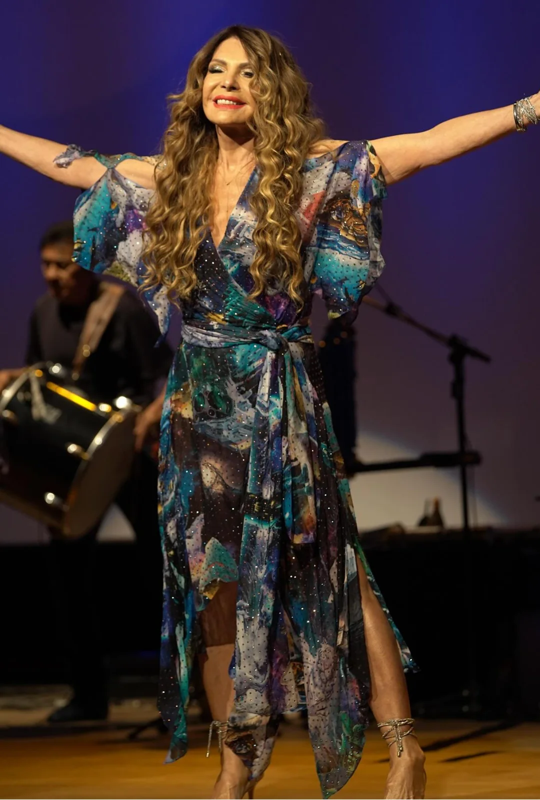
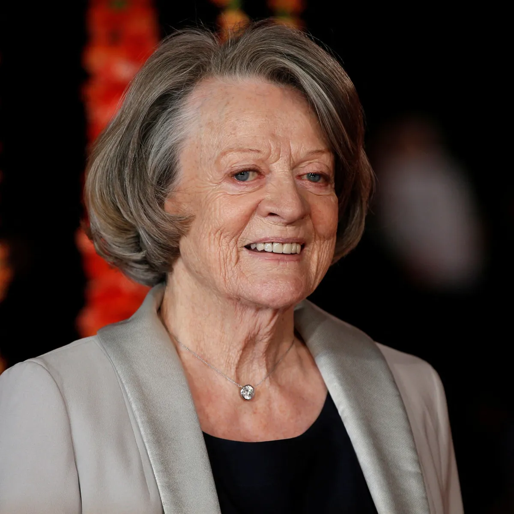
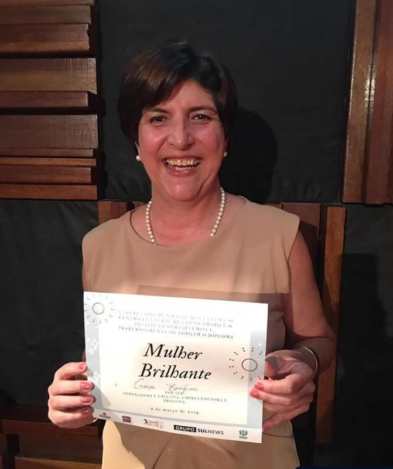

Elba Ramalho
A artista descobriu o câncer em 2010. E declarou à Revista Gol que essa foi uma das experiências mais transformadoras e que a fez evoluir emocionalmente.

Luta contra o câncer de mama
Página dedicada a luta contra o câncer de mama.
A artista descobriu o câncer em 2010. E declarou à Revista Gol que essa foi uma das experiências mais transformadoras e que a fez evoluir emocionalmente.

A atriz descobriu a doença em 2007. E, em meio ao tratamento com quimioterapia, filmou Harry Potter e o Enigma do Príncipe.

Ela fundou o ateliê de lingerie Monnali em 2018, com peças especiais para atender mulheres que fizeram mastectomia (remoção de mama). O projeto teve inspiração no caso da cunhada dela, que passou pelo procedimento. A loja disponibiliza cremes e produtos para tratamento oncológico.
